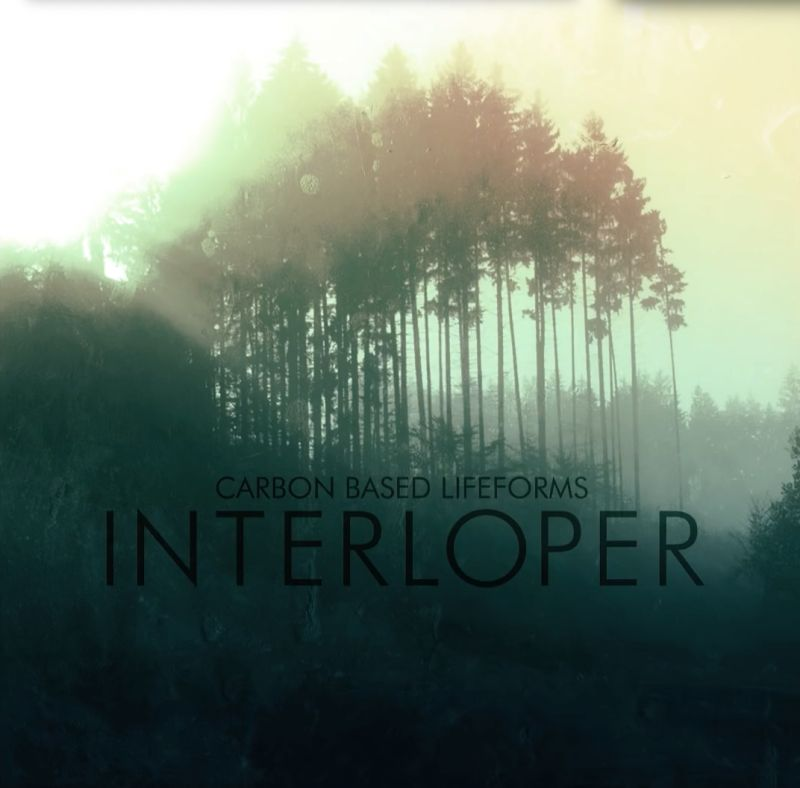
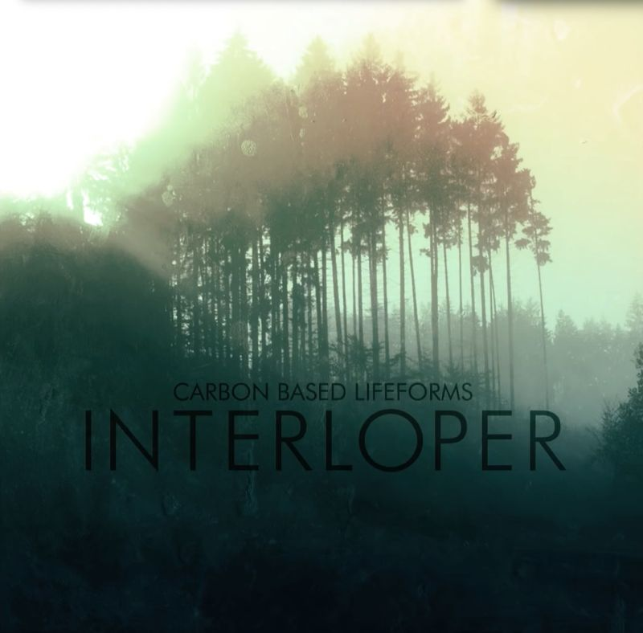

Avoid distractions
Freedom
Music
Carbon Based Lifeforms
16 albums available - I bought all from: https://carbonbasedlifeforms.bandcamp.com/
Favourite album:


since reading "Deep Work", I have optimised my work sessions for it.
16 albums available - I bought all from: https://carbonbasedlifeforms.bandcamp.com/
Favourite album:
